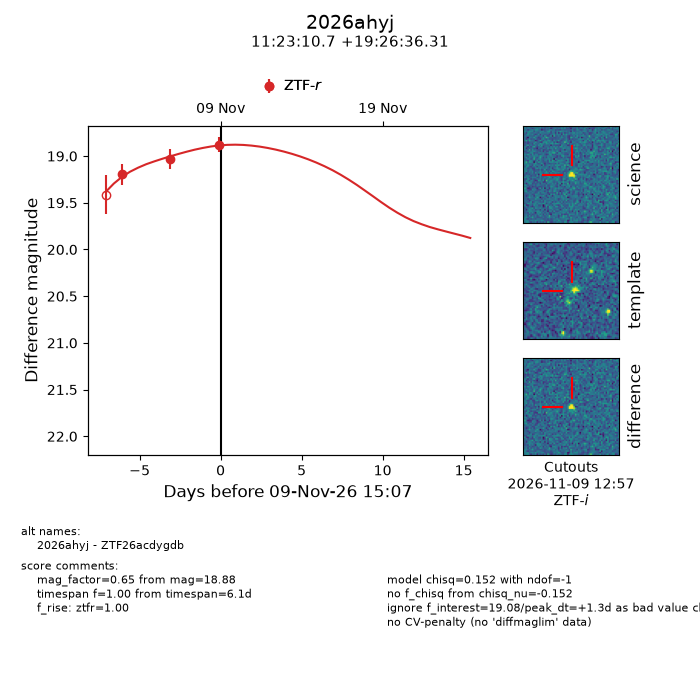
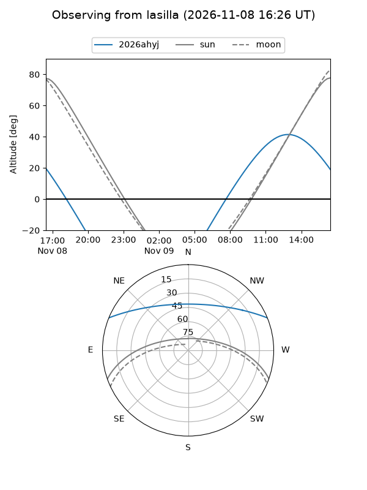
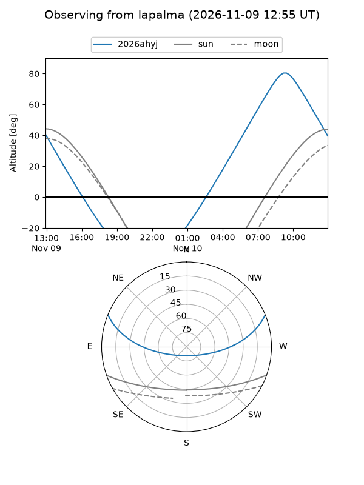
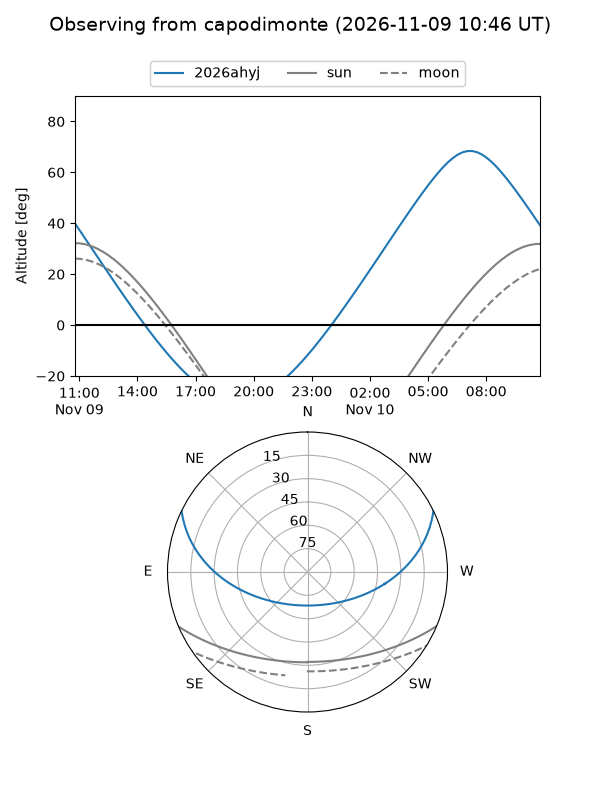
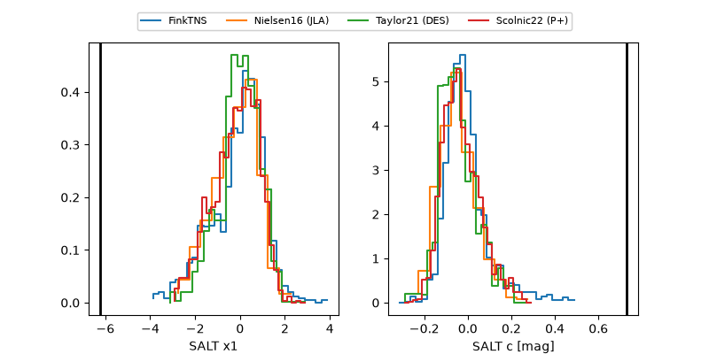

2026ahyj
Target 2026ahyj at 2026-11-09 15:10
Aliases and brokers:
FINK-ZTF: ztf.fink-portal.org/ZTF26acdygdb
Lasair-ZTF: lasair-ztf.lsst.ac.uk/objects/ZTF26acdygdb
ALeRCE-ZTF: alerce.online/object/ZTF26acdygdb
YSE-PZ: ziggy.ucolick.org/yse/transient_detail/2026ahyj
TNS name: wis-tns.org/object/2026ahyj
Direct TNS query: direct search
alt names
ZTF26acdygdb (ztf,fink_ztf)
2026ahyj (tns,yse)
Coordinates:
equatorial (ra, dec) = 170.7944,+19.44342
equatorial (HMS+DMS) = 11:23:10.66,+19:26:36.31
galactic (l, b) = (229.0299,+68.36501)
Flags:
peak dt: +1.3
Photometry:
last ztfr=18.88
3 ztfr detections
Lightcurve

Visibility



Additional plots
